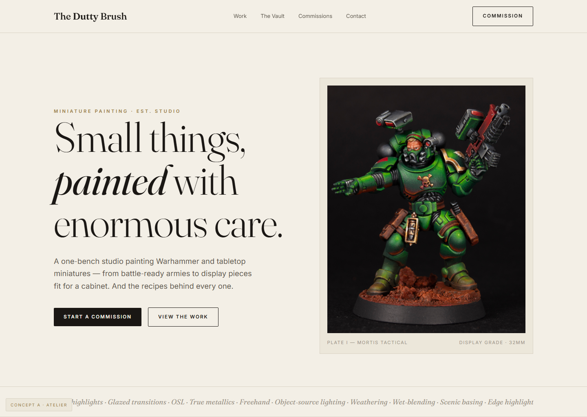
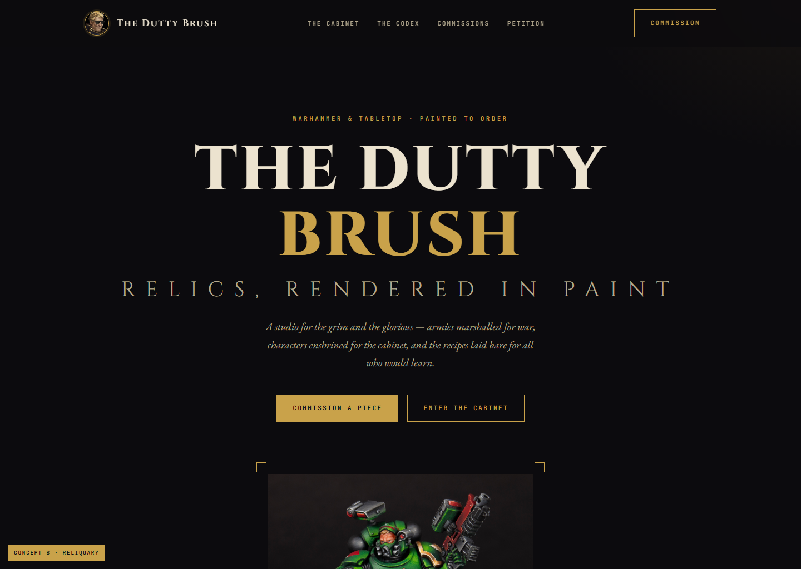
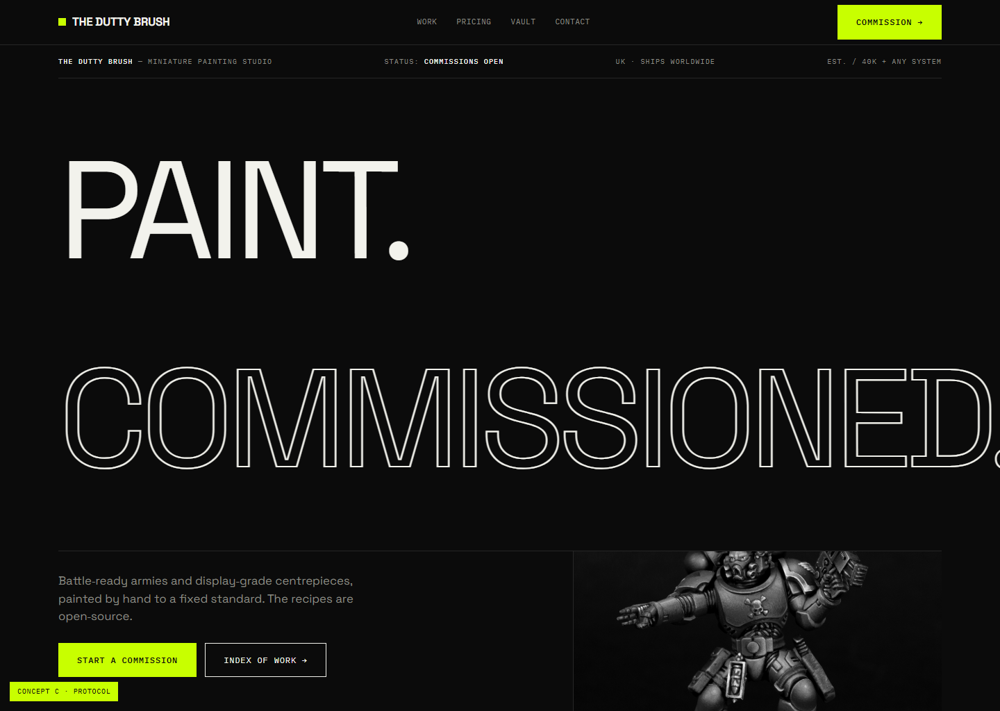

Built from the 4‑perspective audit — work‑first, proof‑heavy, premium. Each is a ground‑up rethink, not a reskin. Open one, then tell me which to take all the way (or mix).

Light, editorial, museum‑grade. Warm paper, high‑contrast serif, huge photography, gallery whitespace. The work treated as fine art. Maximum premium.
Open Atelier →
Elevated gothic codex. Ink + aged gold, inscriptional caps, illuminated framing, ornament. Leans into the lore grandeur — refined, not generic dark.
Open Reliquary →
Brutalist / Swiss. Oversized type, hard grid, mono data, one electric accent, index‑numbered work. Confident design‑studio energy. Memorable.
Open Protocol →All three bake in the audit fixes: work‑first with macro/multi‑angle galleries, clear pricing, the free recipe Vault as the community hook, and a strong commission funnel. Imagery shown is your existing work as placeholder — the real depth comes from your Instagram archive.